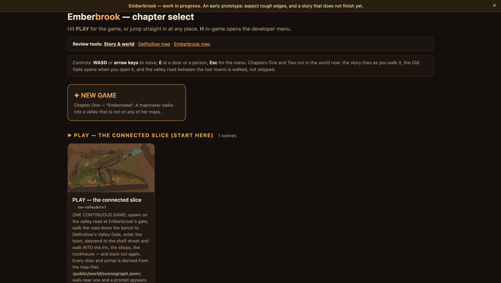
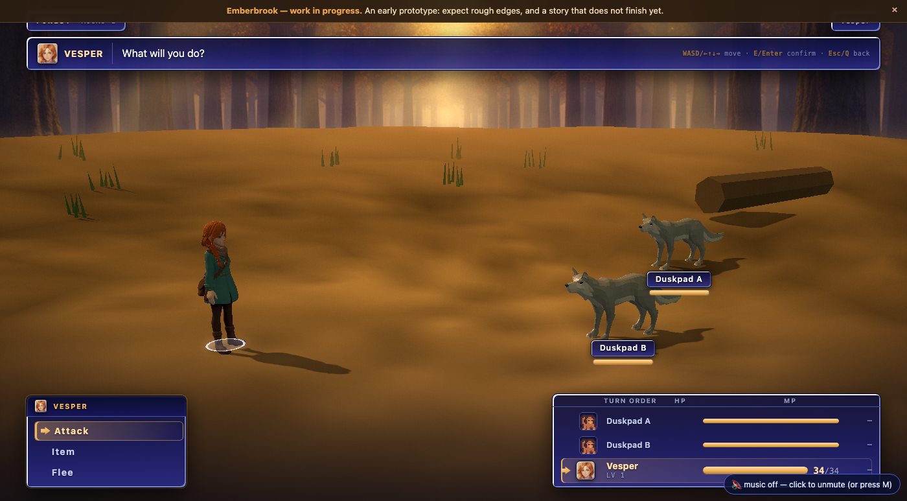
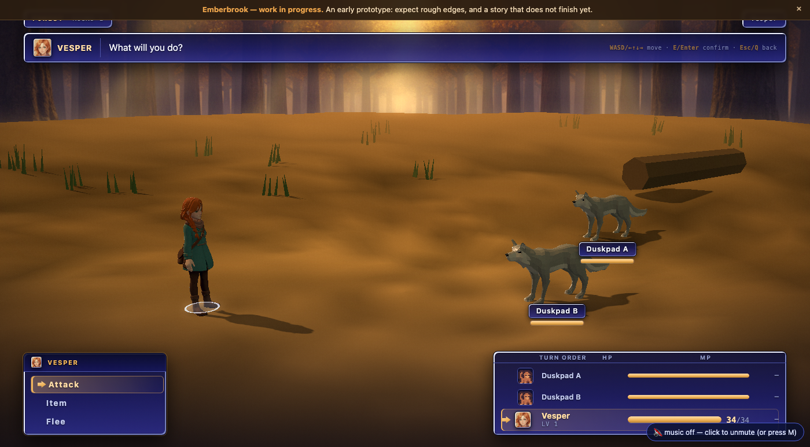

<meta charset='utf-8'><title>Deploy receipt — 2026-08-03</title><style>
body{background:#140f0c;color:#ece0d0;font:15px/1.6 system-ui,sans-serif;margin:0;padding:28px 22px 60px}
main{max-width:1100px;margin:0 auto}
h1{color:#e9a24b;font-size:26px;margin:0 0 4px}
h2{color:#e9a24b;font-size:17px;margin:34px 0 10px;border-bottom:1px solid #3a2a1a;padding-bottom:6px}
p{color:#cdbba4;margin:8px 0}
.sub{color:#a89179;margin:0 0 20px}
a{color:#e9a24b}
img{width:100%;border-radius:8px;display:block;border:1px solid #3a2a1a}
figure{margin:0 0 22px}
figcaption{font-size:13px;color:#a89179;margin-top:6px}
table{border-collapse:collapse;margin:10px 0;font-size:14px}
td,th{border:1px solid #3a2a1a;padding:5px 12px;text-align:left}
th{color:#e9a24b;font-weight:600}
td.n{text-align:right;font-variant-numeric:tabular-nums}
code,pre{font-family:ui-monospace,Menlo,monospace;font-size:13px}
pre{background:#1c1511;border:1px solid #3a2a1a;border-radius:6px;padding:12px 14px;overflow-x:auto;color:#cdbba4}
.g{color:#6fd08c}.r{color:#e2755f}
ul{color:#cdbba4}li{margin:4px 0}
</style>
<main>
<h1>Deploy receipt — 2026-08-03</h1>
<p class='sub'>LIVE: <a href='https://junshern.github.io/emberbrook/'>junshern.github.io/emberbrook</a>
 · build <code>2026-08-03T07:11:27.471Z</code> · 373 files / 514.0 MB · <code>--compress</code></p>

<h2>The encode cache — why this redeploy was cheap</h2>
<p>The build used to re-encode 219 unchanged plates and 16 unchanged scene GLBs every run.
Not the wall clock but the consequence: a slow deploy is a deploy you skip, and the site drifts
behind the branch.</p>
<table>
<tr><th></th><th>cold (cache deleted)</th><th>warm</th></tr>
<tr><td>encode</td><td class='n'>0 hit / 235 miss</td><td class='n'>235 hit / 0 miss</td></tr>
<tr><td>wall clock</td><td class='n'>337.5 s</td><td class='n'>3.0 s</td></tr>
</table>
<p>Keyed on <code>sha256(source) + sha256(every parameter that changes the bytes)</code> — the
encoder source itself, <code>--plate-max</code>, the Pillow/gltf-transform versions.
Byte-identity, cold tree vs warm tree:</p>
<pre>A dist-c   : 374 files   digest 92eded5999c2402772c61b791e474c69a90432ae841f67f3acddd927393e243c
B dist-warm: 374 files   digest e57b856fe3cddee8a3c3b9ea31e9997df034d9a4fc177c48beb5b9d49da2a0c8
only in A: 0   only in B: 0   differing: 2
  BUILD.json                  OK — identical once built/seconds/cache is removed
  assets/story-manifest.json  OK — identical once `generated` is removed
BYTE-IDENTICAL: 372/374; the 2 that differ are the two build clocks.</pre>
<p>Negative control: with 219 entries cached for exactly those sources, a build run with
<code>--plate-max 1920</code> reported <b>zero hits</b> and re-encoded everything. The parameter
is in the key, not decoration.</p>

<h2>What the deploy fixed on the way out</h2>
<p>Measured on the <i>previously live</i> site: 26 × 404, of which <b>16 were every scene card's
thumbnail</b> — <code>index.html</code> builds them as a CSS <code>background-image</code>, the webp pass
deleted the <code>.png</code>, and the runtime shim that rewrites <code>.png→.webp</code> is only injected into
<code>play.html</code>. Every card on the front door was a blank rectangle, and had been for as long as
<code>--compress</code> has shipped.</p>

<h2>Verification — <span class='g'>live 29/29</span> · <span class='g'>local 29/29</span></h2>
<p><code>node tools/static_verify.mjs --url https://junshern.github.io/emberbrook</code> — real Chrome,
driving the deployed site over the wire, not a local tree. The same instrument against the local
<code>dist-c</code> is also 29/29, which is what makes the live green trustworthy rather than a
coincidence of one host.</p>
<ul>
<li>zero failed network requests · zero unexpected 4xx/5xx · <b>zero console errors</b></li>
<li>10 expected 404s remain and are reported separately: the runtime probing for per-bundle
optionals (<code>zones/depth/cine/meta.json</code>) plus <code>favicon.ico</code></li>
<li>NEW GAME → <code>emb-cine</code>/<code>woodroad</code>, body walks 4.5 m, a door edge swaps into
<code>emb-item-int</code> and back, menu on real party data, a battle, save → cold reload lands on the
same scene and shot</li>
</ul>

<h2>Depth occlusion, measured on the deploy</h2>
<p>The engine's own framebuffer, via <code>SIM.paint({tested})</code>: the body is drawn flat magenta
with the depth test off (the whole silhouette) and on (what the baked plate lets through). Swept
across standable cells in the shipped shot:</p>
<pre>[56,12]  648 -> 0     100% hidden
[56,10]  596 -> 201    66%
[38,8]   572 -> 222    61%
[64,22]  859 -> 497    42%
[66,20]  810 -> 552    32%</pre>
<p>A broken depth pass lets 100% through everywhere. This is exact-pixel occlusion working.</p>

<h2>Frames</h2>
<figure><figcaption>01 — the front door on the live site: WIP banner, NEW GAME, and a card thumbnail that now loads (it 404'd before this deploy).</figcaption></figure>
<figure><figcaption>02 — NEW GAME lands in Chapter One's opening shot, emb-cine/woodroad.</figcaption></figure>
<figure><figcaption>02b — after the opening beat: pre-rendered plate, the objective card, the Old Gate's "Leave Emberbrook?" prompt in range.</figcaption></figure>
<figure><figcaption>03 — the story runtime narrating on the live deploy, with the body at the waystone where the plate's depth hides 100% of her pixels (what you see through it is the GHOST pass, by design).</figcaption></figure>
<figure><figcaption>04 — after walking 16.5 m: step for step identical to the same probe run against the local build.</figcaption></figure>
<figure><figcaption>05 — a real battle on the live site: cut-in portrait, turn order, HP/MP, command menu.</figcaption></figure>
<figure><figcaption>06 — the same moment from the local build, for comparison. The turn-order rows carry the wrong face for the Duskpads (a party bust where a monster thumbnail belongs) — noted, not chased: it is identical in both trees and predates this deploy.</figcaption></figure>

<h2>Left standing, deliberately</h2>
<ul>
<li><b>10 expected 404s.</b> The runtime probes for <code>zones/depth/cine/meta.json</code> per bundle
and takes <code>null</code> for an answer; a cinematic scene has no <code>zones.json</code>, an interior no
<code>cine.json</code>. Exempting them loses no coverage — the build's reference-integrity gate already
fails on any path that resolves in <code>public/</code> and not in the build, so what is left here is a
request for a file that exists in neither tree.</li>
<li><b>The monster thumbnails in the turn queue</b> (frame 06). Another lane's surface.</li>
<li><b>DRACO stays off for scene bundles</b>, depth/mask are never resized, and the
<code>glTF</code> magic gate now also guards anything served out of the encode cache.</li>
</ul>
</main>
